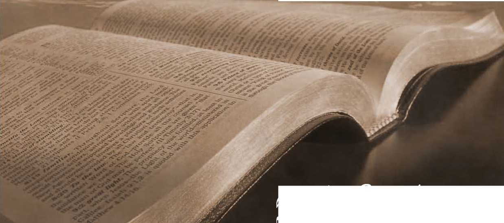

No. 70—Cheerful Christians. Divine Predestination in Respect to Mankind
0iblp students'
ENTERED AT THE POST OFFICE, ALLEGHENY, PA, AS SECOND-CLASS MATTER
SIX CENTS PER YEAR
“Wbom Oob foreknew be also btb predestinate.”—IRom. 8:29
WE take this subject because we believe it is susceptible of a reasonable, Scriptural explanation, abundantly satisfactory to every consecrated Christian. We hope to show that the difficulty surrounding the question lies not in the Scriptural statements respecting it, but in the fallacies of the various creeds and traditions, which not only make void the teaching of the Word of God but confuse the people of God on this as well as on other subjects. We hope to show you from the Scriptures that the doctrine of predestination is Scriptural, reasonable and beautiful, and thus to confirm your faith in God, in his Word and in his purposes yet to be accomplished, of which the Lord through the prophet declared, “My ways are not your ways, neither are my plans your plans, saith the Lord; for as the heavens are higher than the earth so are my ways higher than your ways and my plans than your plans.”—Isa. 55:8.
DIFFICULTIES OF SO-CALLED “ORTHODOXY.”
In order to have the subject clearly before our minds it is advisable that we glance at the commonly accepted view of foreordination and the difficulties which it presents, that turning from this we may see the beauty and reasonableness of the Scriptural presentation. Our Methodist friends and some others ignore the subject of foreordination, but not without difficulty, for they cannot avoid the conclusion that either the Almighty Creator knew what he was doing and is doing, or that he is working on a haphazard plan, the results of which he does not know. To feel that we have to do with a God who is not omniscient would necessarily mean a serious diminishing of our faith and confidence and hope. We might think of the Almighty as well intentioned, kindly disposed, but if we did not have confidence in his foreknowledge— that he knew the end from the beginning—the apparent failure of the divine plan in the past six thousand years would seriously discourage our faith and hope respecting the future.
On the other hand our Presbyterian, Lutheran, Congregational and Baptist friends, with others who hold with them the doctrine of predestination, have their difficulties. Holding that God foreknew and predestinated whatsoever cometh to pass seems to force the conclusion that God himself has been the author of sin, the designer of it, the instigator of it, the perpetrator of it, and the further conclusion that all who were saints were foreordained to be saints, and all the wicked were foreordained to be wicked; that this foreordination respecting them began in the divine purpose before the foundation of the world, and hence before the creation of the first pair, renders the difficulties all the greater, especially when we add to it either the written or unwritten creeds of all these denominations to the effect that the little flock are going to a comer of heaven predestinated for them, while the great mass of mankind are going to a great place called hell, elaborately fitted up with a complete corps of fire-proof devils and with fuel to last to all eternity. To think of this being a divine provision for the great majority of the race before the work of creation had begun—no wonder it staggers our dear friends. It is to their credit that they are renouncing such a heathenish theory, and that some of them are straining the eyes of their understanding for a better light on the subject.
THEIR “HELL” IS THE DIFFICULTY.
The difficulty with those who hold the so-called orthodox view of predestination is in their erroneous view of hell—in their erroneous view of what constitutes the wages of sin, death. If they could get rid of the hell-fire, eternal-torment theory, invented during the Dark Ages, when men supposed that they did God service in burning one another at the stake, and if instead of that repugnant and false view they could get the real Scriptural view of it—that death, annihilation, is the wage of sin—they would thereby remove from before their mental vision the great obstacle which hinders them from seeing predestination in its true Scriptural light.
As a matter of fact the word predestination is never used in the Scriptures in respect to the wicked, nor even in respect to all of the good. It is applied wholly to the Church and her interests, and never applied to the world and its interests. We are not wishing to give the thought that God does not have a foreknowledge respecting the world’s interests and affairs, but merely pointing out that all the statements along these lines are to the Church and respecting the Church.
FOREKNOWLEDGE NOT FOREORDINATION.
It is a common mistake to confuse foreordination with foreknowledge. The two thoughts should be kept separate and distinct before our minds: God as an omniscient one knows all things, and during the 6,000 years since the fall of father Adam he has permitted sins of different kinds which he did not foreordain.
To foreknow that mental, moral and physical degradation would follow Adam’s sin and the sentence of death therefore visited upon him, and that thus the whole human family would be overwhelmed in sin and death and become a groaning creation is one thing, and to foreordain or decree or cause to come to pass such things is quite another matter. God denies that he is in any sense of the Word the author of evil. He admits that he is the author of many things that are called evils in the world, that are calamities, and that he has permitted these and even ordained some of them as punishments for sin, but he nowhere .admits that he is the author of sin, wickedness. On the con ary he declares against all sin, sets himself as the standard of righteousness and purity and truth, ■and commands sinners everywhere to repent and reform—to cease to do evil and to learn to do well.
Divine foreknowledge foresaw Adam a perfect man under perfect conditions, but with imperfect knowledge and subject to temptation, foresaw his fall into sin, under the penalty of sin, foresaw all the •consequences as they have occurred, and permitted ■all these without foreordination intruding upon the matter at all. On the other hand, foreordination came in when God purposed the salvation of Adam and his race. He foreordained, planned in advance, what h«g would do: He would provide a Redeemer who would give an illustration to all the angels as well as to the fallen race, not only of his sympathy and compassion toward us as sinners, but also of his own justice, and demonstrate that his law is unchangeable, that the sentence of death once passed could not be rescinded, that if Adam were released from that sentence it must be by having another take his place and die in his stead. ■
The Father foreordained that his only begotten Son, higher than angels as well as higher than man. should be the Redeemer, and this necessitated his leaving the glory which he had with the Father and the heavenly plane and his assumption of the earthly human nature. This God foreordained should be accomplished in his own due time, and we well know that God’s due time was more than 4,000 years after the transgression had taken place.
The Father predestinated further that his Son should not be the loser by such obedience to the divine plan. Indeed he purposed on the contrary a reward and high exaltation to him who was already higher than all others and next to the Father himself. He predestinated a new begetting to his Son, that thus after giving his life for man’s redemption he might grant him a new plane of being. He predestinated that at the time of his consecration, when he would be thirty years of age, he should be begotten again by the holy Spirit to a new nature, so that while he, according to the flesh, was dying for the three and one-half years of his ministry and accomplished the death at Calvary, he nevertheless was living as a new Creature during those three and one-half years, and as a new Creature was raised from the dead upon the third day, a spirit being, of the divine nature, far above angels, principalities and powers, and every name that is named, to die no more, but on the contrary in a future “due time” to assume the kingship of earth and to bless Adam and all of his race, whom he purchased with his life, his own precious blood. The foreordination undoubtedly includes the glorious Kingdom of the Millennial age, in which Messiah shall be King over all the earth and exercise his authority in restraining Satan and all evil, and in causing all mankind to come to a knowledge of the Truth and to opportunities for life everlasting through the knowledge of the plan of God, and by obedience to the divine requirements, through the assistance and restitution processes that will then be in operation.
THE PREDESTINATION OF THE CHURCH.
Throughout the Scriptures the Church, the little flock, are everywhere spoken of as the “elect” of God: even those who dispute the doctrine of election cannot gainsay this fact. As already pointed out, their objection to the doctrine of election, their desire to deny it, is aroused to opposition by the thought that the few are elected to heaven and the many are elected or predestinated to eternal torment. But the Scriptures, as we have seen, teach nothing of this kind. They teach that the whole world of mankind were redeemed by the precious blood, and that the whole world is to receive a blessing at the hands'csf the Redeemer in due time, and that the due time for the world to receive its blessing will be during the Millennial age, the period of Messiah’s reign, but that during this Gospel age, in advance of that reign of righteousness, the Lord is .electing or selecting from amongst the redeemed world a little flock, a Royal Priesthood, to be associated with the Redeemer in the great work of blessing all the families of the earth.
This view that the election of the Church does not mean the reprobation of the world, but, oh the contrary, signifies the blessing of the world through the elect Church, is unobjectionable from any and every point of view. Such an election is desirable and advantageous in every sense of the words. It is such an election as we are accustomed to in our form of government. The law makers and rulers of the people are chosen or elected from the whole for the very purpose of serving or blessing the whole. The elect are few, the non-elect are many, yet the propriety of the matter and the resulting advantages are fully appreciated. Nor does it occur to any one to suppose that those who are non-elect to Congress or some other official position are reprobated to eternal torment or anything disadvantageous. Whence then came the ridiculously absurd misconception of election as the Scriptures present it—the supposition that all except the elect were to suffer torture because non-elected?
FOREKNOWN AND PREDESTINATED.
We might quote various Scriptures aside from our text in proof that the Church was foreknown of God, and predestinated as a class to occupy a certain glorious position in connection with the divine plan for the world’s salvation. For instance, in Ephesians 1:5 the Apostle speaks of the Lord as having predestinated us unto the adoption of sons, and, following, in verse 11, he adds that we are “predestinated according to the purpose’' of God. The Apostle Peter also speaks of the Church as the “elect according to the foreknowledge of God.’ —1 Pet. 1:2.
One mistake which seems to becloud the mental vision of many is the supposition that this foreordination of the Lord respecting the elect was an individual foreordination, as, for instance, that the Lord foreknew you and me, and determined before the foundation of the world that we should be of the elect Church. Nothing of this kind is found in the inspired records. What we do find is a declaration that the Church as a whole, as the Bride or the consort of the Lord Jesus, was foreknown and predestinated of the Father; and, in harmony with that predestination, that there should be such a Bride class, the Lord has been “calling” out of the world individuals of a peculiar disposition, zealous for good works and full of faith in his promises, to the intent that these might make their calling and election sure— might by obedience to the conditions laid down secure a place amongst the very elect, who, as the glorified Bride of Christ, shall be all that the Father intended and predestinated.
It is not for us to say that God could not have known in advance, if he had chosen, just how each one who heard the call and responded to it would ultimately conduct himself in the race course, running for the great prize of joint-heirship with his Son, but it is for us to know that God has not anywhere indicated such an individual election or foreordination. It is for us to notice that all the references to the elect pertain to the Church as a whole, and not to its individual members, except as they shall by the grace of God make their calling and election sure by obedience to the terms of their covenant.
This whole subject is beautifully clear from the standpoint of our text, after once our minds are freed from the absurdities with which they were so long freighted. The Apostle is discussing the interests of the elect Church—he is assuring us that God is for us and not against us; that although the difficulties and trials by the way may seem to be adverse to our interests, nevertheless we have the assurance of God’s Word that if we are truly his he will overrule in all of our affairs so that all things will work together for good because we love him and have been called according to his purpose—called in harmony with his predestination. He predestinated that there should be a Church, and he has caused the message or invitation or call to membership in that Church to come to us. The fact that we have heard and appreciated that call is an evidence that God is for us and desires that we should make our calling and election sure to a place in that glorious company which he has predestinated.
It is to these whom he would encourage, the “called ones according to his purpose,’ that the Apostle explains the method, the modus operand! of their predestination, saying, “Whom he [Jehovah] did foreknow he also did predestinate [foreordain] to be conformed to the image of his Son, that he might be the first-born among many brethren.” Let us notice the limitations that are placed about this elect class. The Lord predestinated, foreordained before man was created at all, that in view of the redemptive work to be accomplished he would select from amongst men the Bride class, and he foreordained also that each one who would be of that Bride class would be a “copy of his Son”—have the same character likeness as Jesus.
Was that a safe predestination? Surely it was. Will that predestination permit any to get into the Bride class while possessing a different character from that of their Lord and Redeemer? By no means. It fixes and limits the class most absolutely, and all will agree that the limitations are most just and reasonable. The Almighty has a great favor to bestow, and he proposes to bestow it upon a certain limited number, and that each one who would be of that limited number must have the character-likeness of the Lord Jesus. Our hearts say Amen to such a glorious predestination as this. And that is the end of the matter—no other predestination is mentioned. The Scriptures show us various classes of saved ones, some on one plane of being, others on another; but this elect class on the highest plane, “partakers of the divine nature,” must all have peculiar characteristics that are here set forth.
THE METHOD OF GOD’S ELECTION.
Our next query is, How does God undertake to make this election or selection which he foreordained ? The Apostle explains the procedure in minutiae, saying that the predestinated ones were all called, and that previous to their call they were justified, and that previous to their justification they were honored—honored, blessed with the privilege of, hearing the message of God, the tidings of great joy— whereas the majority of the world are not thus specially honored at the present time, but are in ignorance, blindness, deaf to the Word of the Lord. And we might remark that just at this point a mistranslation in the common version has helped to becloud the subject, for this word honor from the Greek Doxazo is mistranslated glorified. Now let us reverse the order of this statement and see the whole matter in the light of our experiences.
God has predestinated, foreordained, that he will have an elect little flock to be the members of the Royal Priesthood under the great High Priest Jesus, who in conjunction with him shall bless the world. In order to find these and to select them from amongst men he honors some, blesses some with the light of the knowledge of his grace—the knowledge of the redemptive work accomplished by our Lord, the knowledge of the fact that coming to the Father through him they may have forgiveness of sins and reconciliation. So many as take these steps become what is known in the Scriptures as justified ones, whose sins are forgiven, who are counted as no longer dead in trespasses and sins, but as restored to divine favor. To these justified ones the Lord then sends the call, the invitation, to be of the Bride of Christ—the invitation to walk in the footsteps of the leader, to fill up that which is behind of the afflictions of Christ, to be dead with him in the present that they may also live with him in the future.
Not all of the justified have responded to this call or invitation of the Gospel age. The great majority have been satisfied to simply have a measure of reconciliation, and have ignored the Apostle’s exhortation, “ I beseech you, brethren, [by God’s mercy as justifying you from sin], that ye present your bodies living sacrifices,” etc. (Rom. 12:1.) But those who do accept the call are counted as in the race to win the prize of joint-heirship in the Kingdom, and they are exhorted by the Apostle to so run as to obtain—to make their calling and election sure by obedience—to fight the good fight of faith and to lay hold upon the.blessings promised. These are reckoned to be the called ones, the runners in the race from the time they accept the divine invitation or call and start on the race course to run for the prize. Some run faithfully, zealously, others languidly; the faithful, the zealous, the self-sacrificing, are the ones who demonstrate their attainment to the character-likeness of their Redeemer.
THE VIRGINS, HER COMPANIONS.
These are the class whom the Lord predestinated should be sharers in Emmanuel’s glorious Kingdom. Laggards amongst these called ones, the less zealous, do not come fully up to the character-likeness of the great Overcomer or Redeemer, and will therefore not be in the elect little flock, his Bride. Nevertheless, having espoused the cause of righteousness, they will not be condemned with the world but will be tested, and, if under the tests of trials and difficulties they do not deny the Lord, they may be of the great company who, coming through great tribulation, will not be in the throne but before it, who will not constitute the living stones of the Temple but will serve God in his Temple, who will not be the Bride, the Lamb’s wife, but the servants, the virgins, her companions who follow her, who share a blessing but not the supreme blessing of the elect. Here, then, are two classes amongst the called—the little flock and a great company, both particularly mentioned by our Lord, and particularly differentiated the one from the other.—Psa. 45:14; Rev. 7:13-15.
Thus we see that there will ultimately be two classes received amongst those who have been called, but that only the little flock, or the elect, the predestinated, the Bride class, constitute the overcomers. Yet both of these classes, favored and developed, chiseled and polished during this Gospel age, will, the one on a superior and the other on a lower plane of glory, serve the divine purpose in connection with the Millennial Kingdom, which is shortly to be established for the blessing of all the families of the earth.
Be it noticed that the Apostle’s statement of this matter begins at the. further end. He holds up before us the glorified Church of the future, “changed,” possessed of glory, honor and immortality, as the Bride of Christ. He assures us that this foreordained or predestinated class must all be called or invited before they could have this position; that no man taketh this honor unto himself but he that is called of God. He further assures us that every one thus called to that glorious position must first be justified. Why? Because no sinner would be in a condition to be invited to be of the Bride of Christ. We must be justified from our sins, must be brought into reconciliation and harmony with God before we can be eligible to an invitation to strive for joint-heirship with Christ. Furthermore, every one thus justified, must previously have heard of the grace of God and have believed in it; and to hear under present conditions, amidst the din of error and of sin, is, indeed, a special honor of God that is conferred, not widely nor everywhere, for there be many indeed who,, having 'ears, hear not, and, having eyes, see not,, neither do they understand, even though the Gospel be preached to them in their own tongues. It requires the honor and blessing of the Lord to even take the first step of faith toward the grand position of the elect, predestinated Church.
These Old Theology Tracts, quarterly, varying in number of pages, are six cents per year. Send a postal requesting a FREE SAMPLE of Calamities—Why God Permits Them, The Permission of Evil, and Must We Abandon the Hope of a Golden Age?
WATCH TOWER BIBLE & TRACT SOCIETY, ALLEGHENY, PA., U.S.A.
BRANCHES :—LONDON, N.W. ELBERFELD COPENHAGEN STOCKHOLM YVERDON-SUISSE MELBOURNE